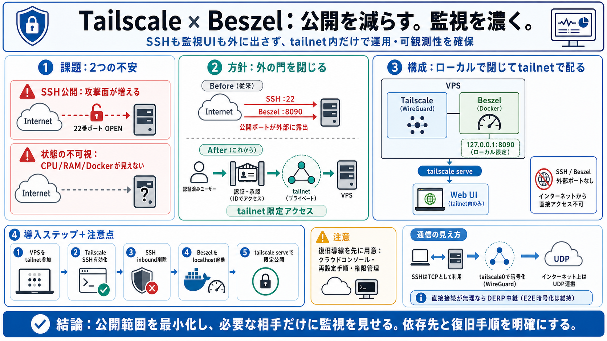

Tailscale Docker Compose Template & Deployment Guide - WEIFENGX
Title: Tailscale Docker Compose Template & Deployment Guide - WEIFENGX # Tailscale. The easiest, most secure way to use …

公開を減らす。監視を濃く。
VPSの「SSH公開」と「監視UIの露出」をやめて、tailnet（プライベートVPN網）内だけで運用・可観測性（observability）を確保します。/ 可観測性＝状態が見えること
Aim 目標
攻撃面を縮小しつつ安全に監視
Core 中核
tailnet限定のアクセス設計
Result 結果
SSHもBeszelも“外に出さない”
2つの不安、同時に解く
課題は「SSHの公開が怖い」と「サーバの状態が見えない」です。鍵認証で安全でも、“公開している事実”が心理的・運用的なリスクになります。
① SSH公開
インターネットに待ち受けるほど攻撃面が増える
② 状態の不可視
CPU/RAM/ストレージやDocker状態を把握できない
外の門を閉じる
インターネット側に門（open port）を立てず、入室証（Tailscale認証）を持つ人だけがtailnetという“構内”に入れる状態を作ります。/ 侵入経路を構内に限定
Before 以前
SSH: 外に公開（露出）
After 以後
SSH: tailnet経由のみ
Beszel
UI: tailnet限定で閲覧
要素は3つだけ
VPS上のTailscaleとBeszelをつなぎ、アクセスはtailnet内だけに制限します。監視UIの経路は「ローカルに閉じる→tailnetで開き直す」です。
VPS側
Tailscale（WireGuard） + Beszel（Docker）
公開範囲
SSH / Beszelともに外部ポートを外す
公開し直し
tailscale serve（tailnet上のみ）
閲覧者
tailnetメンバーだけがWeb UIへ到達
Stepで理解
大まかな流れは「Tailscaleを有効化→SSHを外部公開から外す→Beszelをローカルに起動→tailnetで配る」です。/ 外→内へ
i. tailnet化
VPSにTailscaleを参加（tailscale up）
ii. SSH方針
sudo tailscale set --ssh を有効化
iii. SSH公開を削除
Hetzner等でSSHのinbound許可を外す
iv. Beszel公開
ローカルに閉じて、tailscale serveでtailnet限定
beszelを閉じて開く
Beszel HubはDockerで起動し、portsのバインド先を127.0.0.1:8090に寄せます。その後、sudo tailscale serveでtailnet側にだけ公開します。
Docker ports（意図）
公開IFから隔離（直接到達しにくくする）
tailscale serve（手段）
必要な相手だけにtailnetで到達性を付与
WireGuardの中身
SSHはTCPですが、tailnet上ではTailscaleが暗号化してWireGuard経由で通信します。結果としてインターネット側の運搬はUDPパケットの形になります。
見え方
利用者はTCP（SSHとして）
実体
tailscale0で暗号化トンネル
運搬
インターネットではUDP（UDP transit）
直接が無理なら回り道
TailscaleはNATホールパンチングを狙い、失敗時はDERP（リレー）を使って通信経路を成立させます。DERPは中継であって、エンドツーエンドの暗号化が失われる前提ではありません。
Direct
NAT traversal（直接接続を試す）
Fallback
DERP（中継で到達性を維持）
Security
少なくとも“即露出”を意味しない整理
Caution
脅威モデル確認は公式情報で補完が必要
公開しない監視へ
従来は「ポートを開ける→ログインと監視UIを外に置く」になりがちです。提案構成では「ローカルで閉じる→tailnetで必要にだけ配る」に置き換えます。
従来（例）
SSH: 22/tcpを公開、Beszel: 8090を公開
提案（例）
SSH: tailnet限定、Beszel: 127.0.0.1→tailnet
メリット
露出最小化 + 管理経路の統一
トレード
Tailscale依存が強まる
鍵
救済導線（復旧手順）を先に用意
monitoringの価値
BeszelはCPU/RAM/ストレージだけでなくDockerの状態もWebダッシュボードに含めます。これにより「アプリは動いてるがリソースが枯渇」を早期に検知できます。
見えるもの
CPU / RAM / ストレージ（利用状況）
追加の強み
Docker統計（コンテナの状態・負荷の手がかり）
早期検知
負荷急増・枯渇の前兆
原因究明
“どのコンテナが”の当たりを作る
運用改善
運用が観察可能になる
導入の落とし穴
SSHを外部から閉じると、Tailscaleが動かない時の復旧が最重要になります。入力データには救済手順の詳細がないため、導入前に「代替アクセス」を確保しておく必要があります。
リスク
Tailscale設定ミス / クライアント紛失 / 権限制御の問題
対策（例）
クラウド/コンソール救済、再設定手順、メンバー失効の確認
最終状態は一つ
最終ゴールは「SSHもBeszelもtailnet内だけ」で到達できることです。攻撃面を減らし、監視で運用を前倒しに改善します。
守るもの
外部ポート公開の最小化（露出縮小）
得るもの
可観測性（CPU/RAM/ストレージ + Docker状態）
設計の要
127.0.0.1バインド→tailscale serveでtailnet限定
必須
復旧導線の確保（Tailscale依存に備える）
Title: Tailscale Docker Compose Template & Deployment Guide - WEIFENGX # Tailscale. The easiest, most secure way to use …
Tailscale NAT approaches this differently. It constantly tries to form direct paths using hole punching, UDP keepalives,…
react tailscale headscale Updated Jul 19, 2026 TypeScript ### tailscale / tailscale-android Star 2.3k Tailscale A…
1. NAT Traversal: Tailscale uses STUN and UDP hole punching to establish direct peer-to-peer WireGuard connections betwe…
← Keybits NaN-NaN-NaN Keybits Keybits Tom Atkins’ website. You might also like my shared links, photos and short pos…